Sikram
Africa.
A consistent identity system expressed through logo, colour, typography, pattern and real-world brand applications.
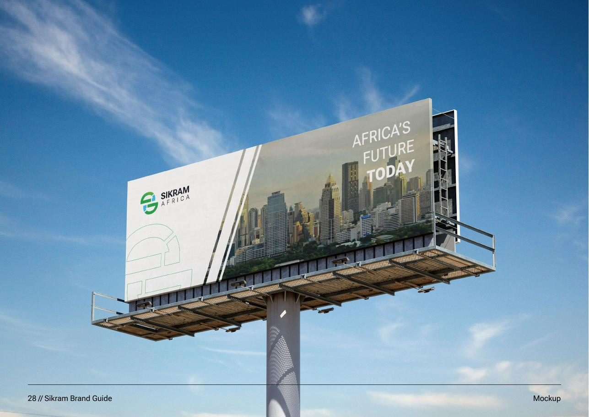
One identity.
Many touchpoints.
The Sikram Africa guideline establishes a recognisable logo and a practical visual language for use across communications and branded materials.
This case study uses pages from the uploaded 16-page Sikram PDF. It includes the logo system, colour palette, typography, pattern language and selected applications from staff identification through to outdoor and digital placements.
Identity, system and applications
A curated presentation of pages 2–16 from the supplied Sikram PDF. The cover is omitted; the selected pages show the actual identity and its applications.
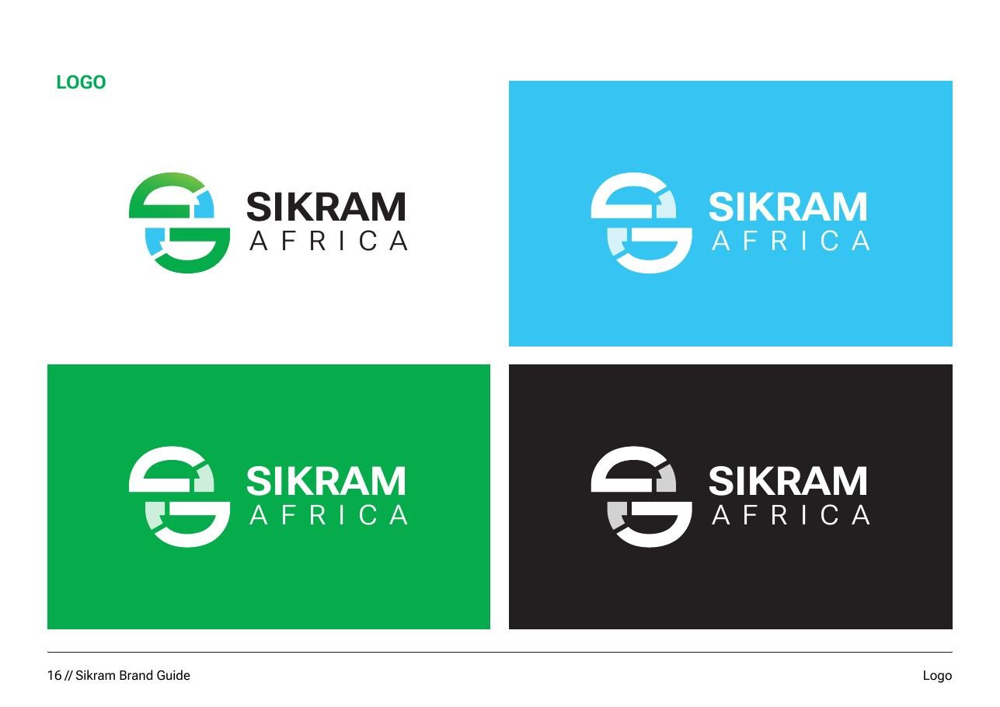
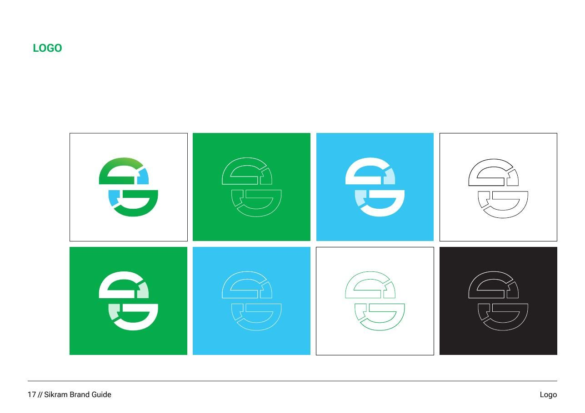
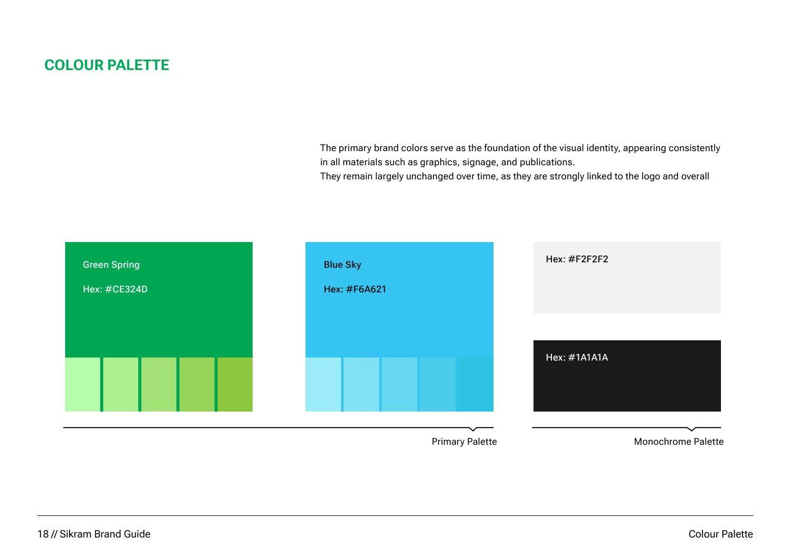
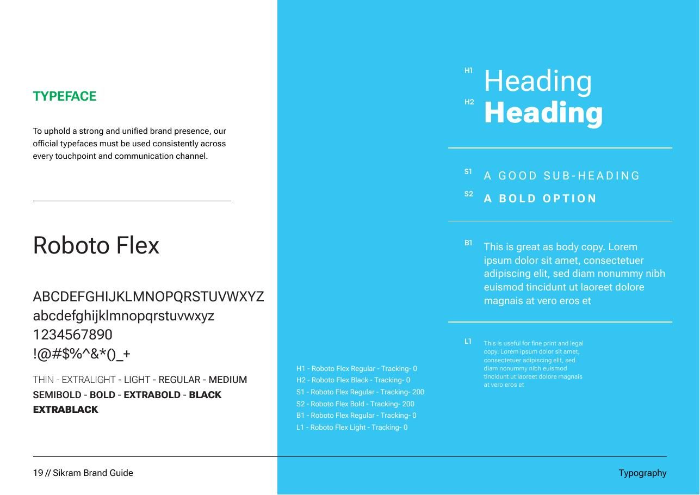
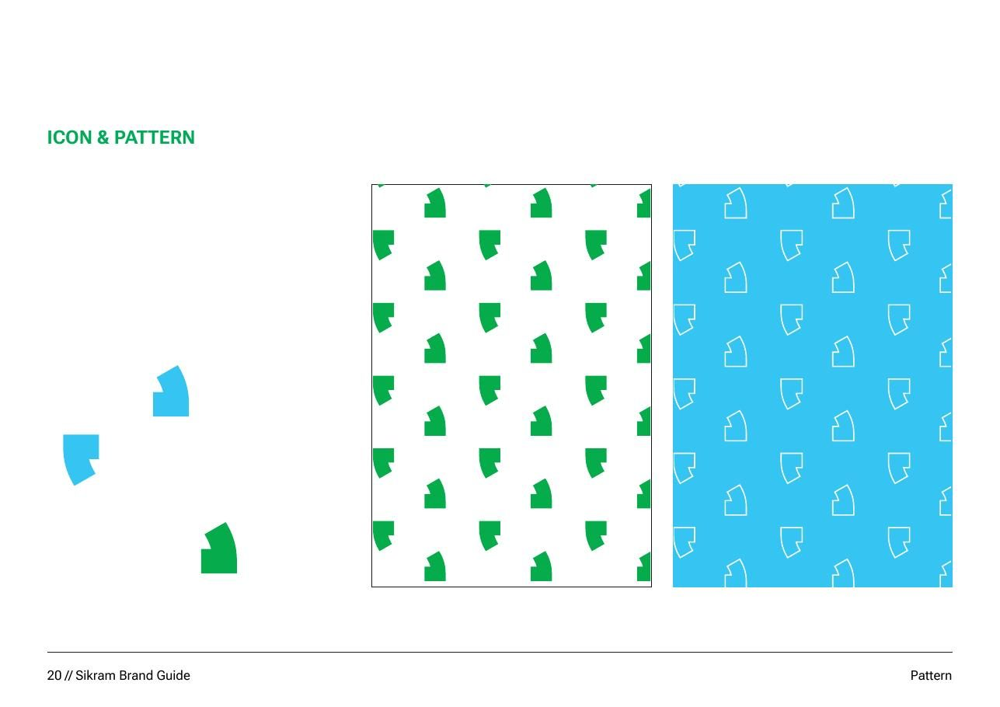
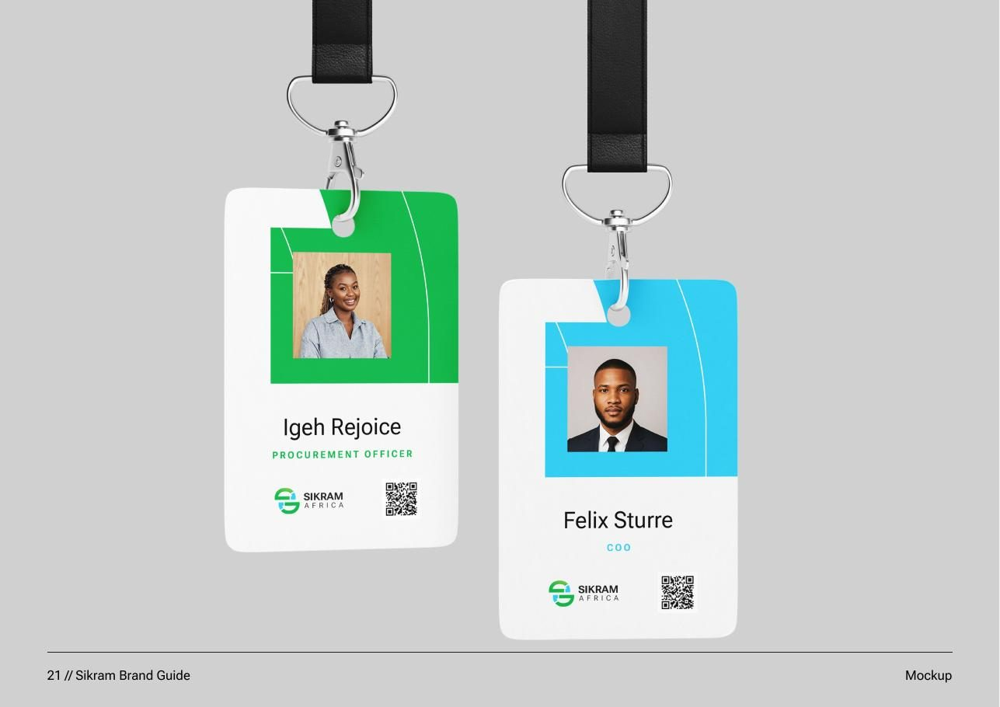
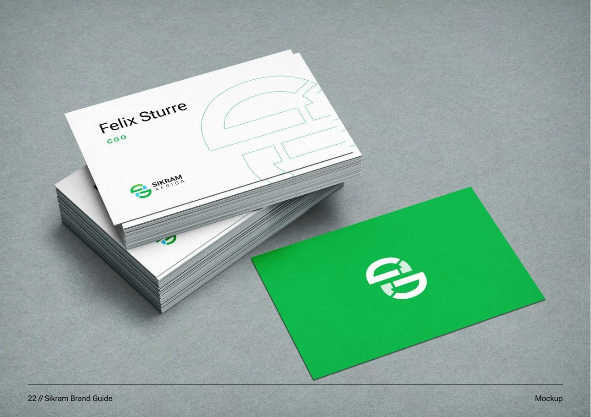
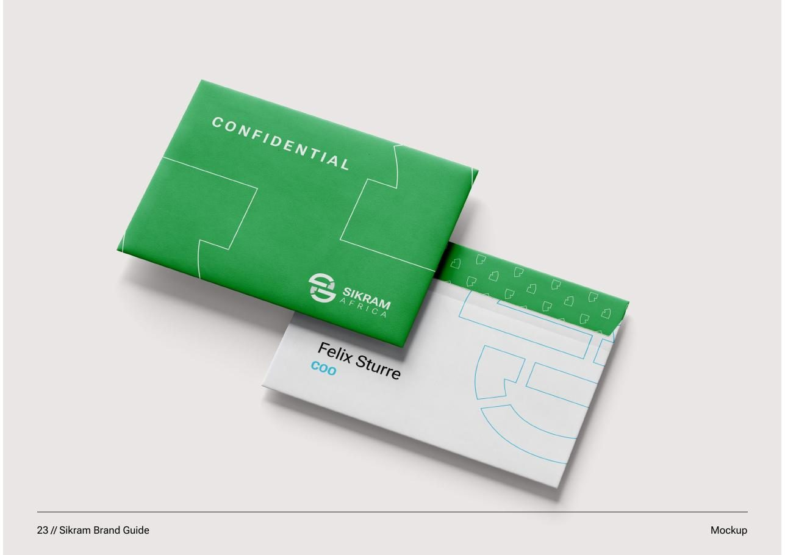
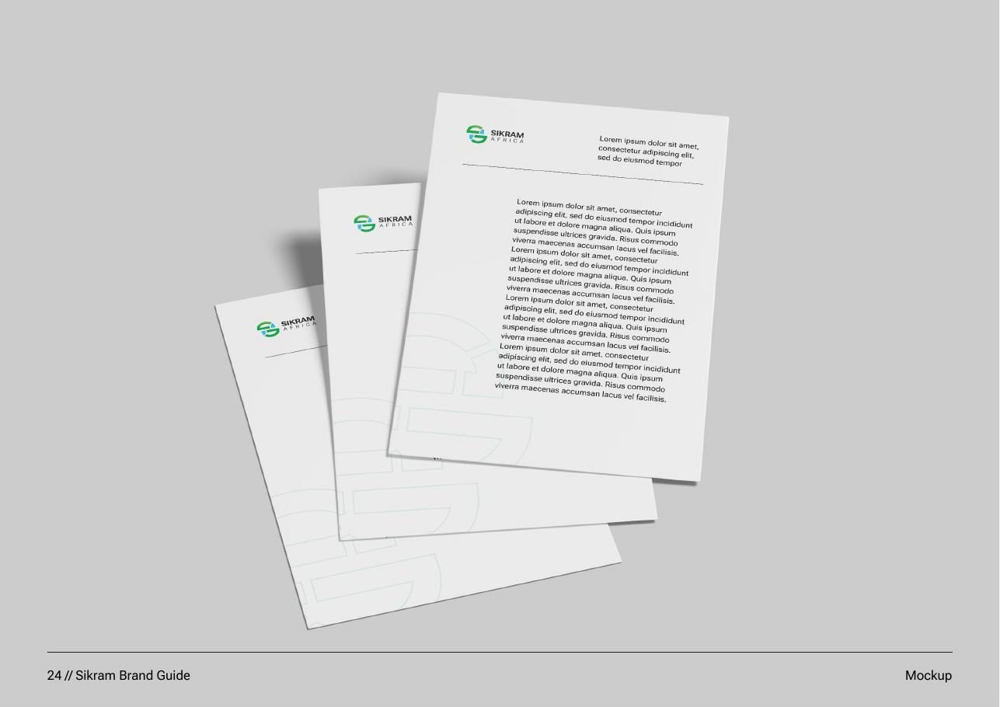
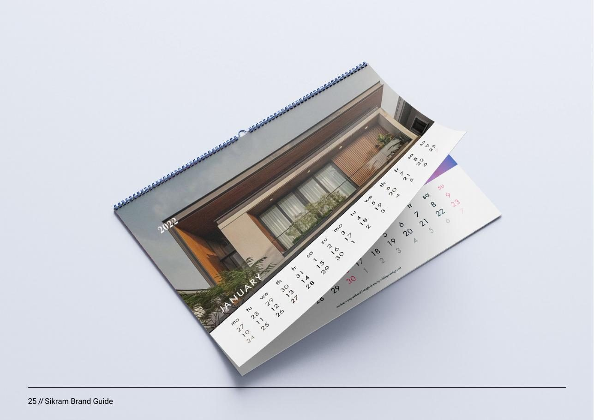
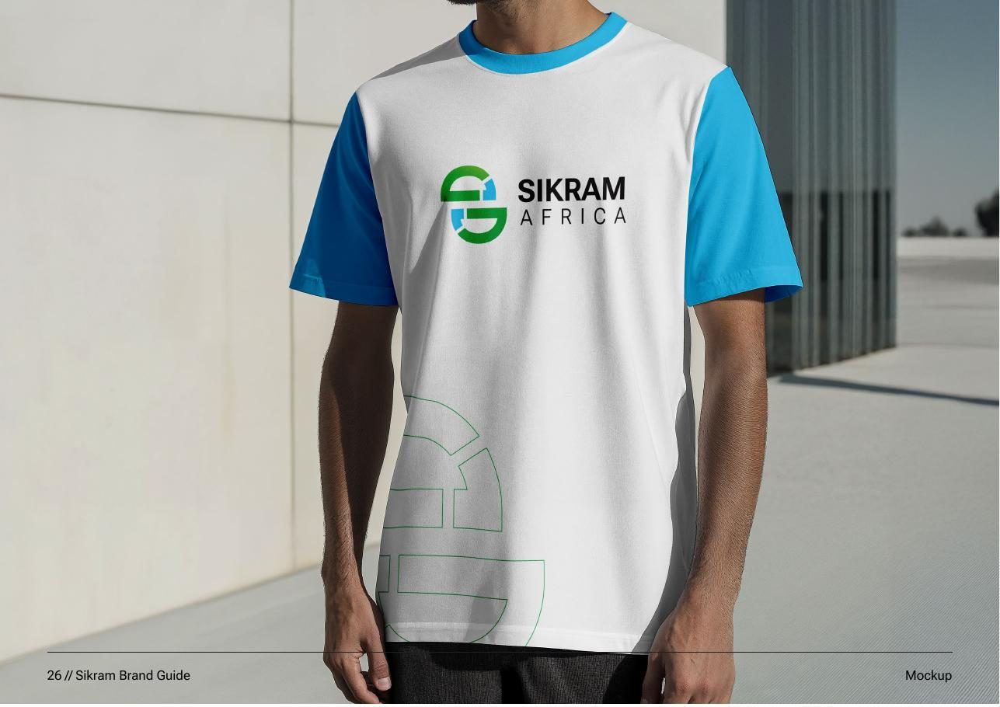
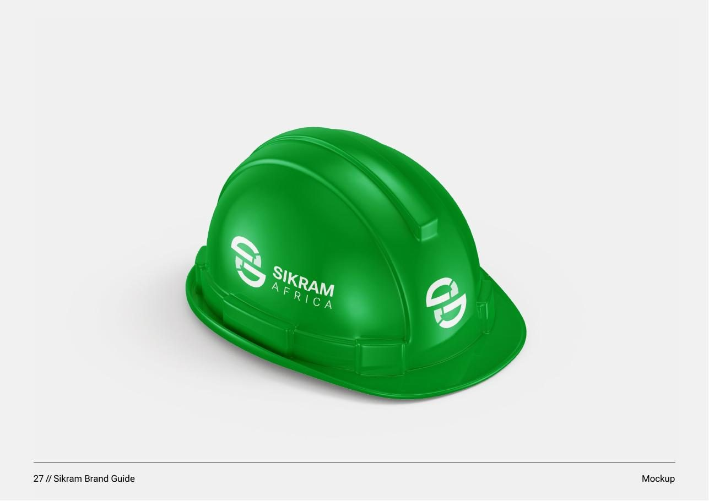
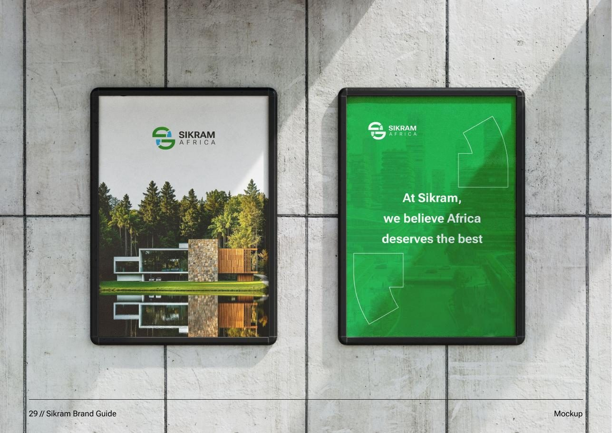